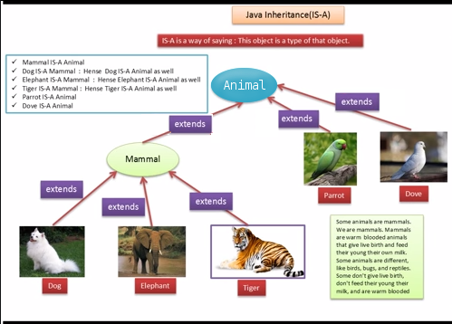

Inheritance¶
Written by PChan on 2017-04-23
- Overview
- “Is-A” Relationship
- (Extend)ing a Class
- Rules Regarding Subclasses
- Overriding Methods
- Object Type vs Variable Type
- Downcasting
- The Usage of Super
Overview¶
Inheritance is the concept of defining a class that would retain the characteristics of another class while augmenting it with unique features. We can also say that the subclass inherits the characteristics of the superclass because it share those characteristics without redefining them.
Proper usage of inheritance gives us multiple benefits:
- Reduce duplicate code by moving it to the superclass
- Add new classes quickly and easily by implementing only the new features
- Enforces some degree of uniformity
“Is-A” Relationship¶
{kind=link}
Inheritance is based off the is-a relationship. When we say that A is-a B, we are saying that A inherits the characteristics of B.
(Extend)ing a Class¶
To define a subclass, we use the extends keyword. The general syntax is shown below:
public class Subclass extends Superclass{
// additional unique features here
}
Warning
Each subclass might only extend one superclass.
Rules Regarding Subclasses¶
- Subclasses may add new variables and methods
- Subclasses may override methods from the superclass
- Subclasses may not access private instance variables or methods from the superclass
- Subclasses would generate the default constructor of the superclass if no constructor is written for the subclass
Overriding Methods¶
When you define a method in the subclass and it already exists in the superclass, you are overriding the method provided by the superclass. This is usually done to provide a different behavior in the subclass than the one implemented for the superclass.
Here is an example:
public class Panda{
public void speak(){
System.out.println("I am a panda!");
}
}
public class BluePanda extends Panda{
public void speak(){
System.out.println("I am a blue panda!");
}
}
In the example above, the BluePanda class overrides the speak() method of the Panda class.
If we were to evaluate the following snippet:
Panda tom = new Panda();
BluePanda jerry = new BluePanda();
tom.speak();
jerry.speak();
We would get the following output:
I am a panda!
I am a blue panda!
Note
Notice how the appropriate speak() method is called in each instance. This behavior is known as
Static Polymorphism.
Object Type vs Variable Type¶
In Java, it is possible to declare a variable with a different type than the type of its value.
- Object Type
- Refers to the true type of an object
- Variable Type
- Refers to the type of the variable
Let’s take a look at this snippet of code:
// Animal.java
public class Animal{
public Animal(){
name = "Animal";
}
}
// Cat.java
public class Cat extends Animal{
public Cat(){
name = "Cat";
}
public static void main(String[] args){
Animal tom = new Cat();
Cat jerry = new Animal();
}
}
In the main method, we are initalizing two objects which would be stored in variables with a different
type than that of the object. If we look at the first line, the type of the object is Cat, but the
type of the variable is Animal. In this case, we say that the variable type is Cat, but the
object type is Animal.
Do you think such declarations are valid? Explain why or why not. Test out your predictions and note down anything you found interesting.
Answer: You would find that Animal tom = new Cat() works, but Cat jerry = new Animal() does
not work. This is because Cat is a Animal, but Animal is not a Cat.
Downcasting¶
Before you continue, make sure that you are throughly familiar with the concept of Object Type vs Variable Type.
We will use the following definitions in this section:
// Teacher.java
public class Teacher{
public int numOfYearsTeaching;
}
// CSTeacher.java
public class CSTeacher extends Teacher{
public int numOfYearsTeachingCS;
}
Downcasting is the technique of typecasting a superclass into a subclass. Consider this snippet of code:
Teacher mr_k = new CSTeacher();
CSTeacher mr_brown = new CSTeacher();
int numOfYearsForK = (CSTeacher) mr_k.numOfYearsTeachingCS;
int numOfYearsForBrown = (CSTeacher) mr_brown.numOfYearsTeachingCS;
If you test this snippet of code, you will find that the third line give you a compile time error. Why is that?
During compile time, mr_k only has access to the methods and variables of the Teacher class.
Since Teacher does not have the numOfYearsTeachingCS attribute, an exception is thrown. To fix
this type of error, you would need to tell Java to treat mr_k as an instance of CSTeacher instead
of Teacher:
int numOfYearsForK = ((CSTeacher) mr_k).numOfYearsTeachingCS;
Warning
Because dot operator take precedence over the type casting operator, the following line will still
produce the error: int numOfYearsForK = (CSTeacher) mr_k.numOfYearsTeachingCS;.
Since mr_brown is already of variable type CSTeacher, we can simply write:
int numOfYearsForBrown = mr_brown.numOfYearsTeachingCS;
Danger
Do NOT confuse this with Dynamic Polymorphism.
The Usage of Super¶
Sometimes you would need to call the methods in the superclass. To do this, you will need the super
keyword.
- super
- A Java keyword that may only be used inside an instance of a subclass and refers to the superclass.
The super keyword allows us to partially override a method:
public String speak(){
super.speak();
System.out.println("I am a subclass");
}
In the speak() method above, we are invoking the speak() method of the superclass so that we don’t
have to copy the code from the speak() method of the superclass.
The super keyword may also be used to call the parent constructor. Since constructors are never
inherited, if the subclass does not have a constructor, the superclass default constructor would be
generated. If the only constructor written in the superclass takes parameters, a compile time error will
result.
Invoking the parent constructor is similar to calling a method from the superclass. Here is an example:
public class SuperClass{
public SuperClass(){
String summary = "I am a class";
String description = "I am a superclass";
int[] prediction = {1, 2, 3, 4, 5};
}
}
public class SubClass extends SuperClass{
public SubClass(){
super();
String description = "I am a subclass";
}
}
Notice how in this example, we invoked super() which executes the statements inside the body of the
default constructor for the superclass. To invoke a superclass constructor with parameters, simply pass
the corresponding parameters when you invoke super(). For example, you might write something like:
super(name, grade, id);
Tip
When you write super, you are referring to the superclass. When you write super(), you are
referring to the default constructor of the superclass. Access the other constructors of the
superclass by passing arguments to super().